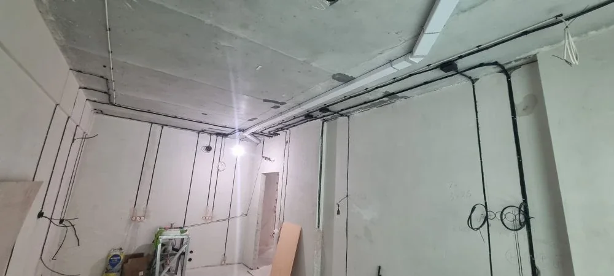

Квартира / новостройка
Электромонтаж квартиры в новостройке: что проверить до отделки
Электрика от застройщика может быть исправной, но не подходить под реальную расстановку кухни, мебели и техники. До начала отделки важно проверить существующие линии, определить будущие нагрузки и решить, что оставить, что доработать, а что выполнить заново.

Сначала проверяем то, что передал застройщик
Проверка начинается с квартирного щита и доступных участков проводки. Нужно понять, сколько линий заведено в квартиру, какие помещения и потребители они питают, как подписаны аппараты и соответствует ли защита фактическим кабелям. Отдельно смотрят соединения, наличие защитного проводника и состояние установочных изделий.
Даже если свет и розетки работают, это не отвечает на вопрос, выдержит ли схема духовку, варочную панель, кондиционеры, бойлер, теплый пол и одновременную работу кухонной техники. Поэтому существующую разводку сопоставляют с будущим планом квартиры.
Когда электрику можно доработать, а когда лучше переделать
Доработка возможна, если кабели и щит подходят по состоянию и параметрам, линии разделены разумно, а большая часть точек совпадает с будущей планировкой. Тогда добавляют недостающие розетки, освещение и отдельные линии под мощные потребители.
Полная или значительная переделка обычно оправдана, если схема неизвестна, соединения недоступны для проверки, мощные приборы объединены с обычными розетками, точек мало или их расположение конфликтует с мебелью. Решение принимают до отделки: после укладки плитки и покраски исправление обходится дороже.
Какие данные нужны до начала электромонтажа
- План квартиры с размерами и окончательным положением перегородок.
- Расстановка кухни, встроенной мебели, техники и сантехники.
- План освещения, выключателей, проходных групп и подсветки.
- Места кондиционеров, теплых полов, бойлера и рабочих зон.
- Пожелания по интернету, телевидению, домофону и слаботочным линиям.
- Фото существующего щита и электрики от застройщика.
Если дизайн-проекта нет, можно начать с плана мебели и списка техники. Главное - не назначать розетки без привязки к конкретному использованию.
Какие линии обычно выделяют отдельно
Отдельные линии часто предусматривают для варочной панели, духового шкафа, посудомоечной и стиральной машин, кондиционеров, бойлера и теплого пола. Состав зависит от мощности техники, условий установки и принятой схемы защиты.
Розетки комнат, кухонной рабочей зоны и освещение разделяют так, чтобы неисправность одного участка не отключала всю квартиру. Влажные зоны и мощные потребители требуют особого внимания к защитным устройствам и проектному решению.
Что предусмотреть в квартирном щите
Щит должен вмещать аппараты защиты, клеммы, маркировку и разумный запас для обслуживания или будущих линий. Полностью заполненный корпус неудобен: добавление кондиционера или другого потребителя превращается в переделку всей компоновки.
До сборки согласуют количество групп, номиналы, схему устройств защитного отключения и размещение слаботочного оборудования, если оно находится рядом. После сборки каждая линия должна быть понятно подписана.
Порядок работ до чистовой отделки
- Фиксируем планировку, мебель, технику и сценарии освещения.
- Проверяем существующую систему и определяем объем демонтажа или доработки.
- Согласуем линии, щит, расположение точек и маршруты кабелей.
- Выполняем разметку, прокладку кабеля и установку подрозетников.
- Собираем и маркируем квартирный щит.
- Проверяем линии до закрытия трасс и передаем привязки скрытой проводки.
- После отделки устанавливаем чистовые механизмы и выполняем финальную проверку.
От чего зависит стоимость электромонтажа в новостройке
На расчет влияют площадь квартиры, количество точек и отдельных линий, состояние разводки от застройщика, материал стен, выбранный способ прокладки, сложность освещения и состав щита. Цена только «за точку» не показывает объем трасс, щитовых работ и подготовки.
Для предварительной оценки достаточно плана, фотографий и списка техники. После уточнения решений смету можно разбить на черновой монтаж, щит, материалы и чистовой этап.
Полный состав услуги описан на странице электромонтажа квартиры под ключ. Дополнительно посмотрите какие линии выделять в квартирном щите и что влияет на стоимость электромонтажа квартиры.
Нужно рассчитать электромонтаж квартиры в новостройке?
Пришлите план квартиры, расстановку мебели, список техники и фото щита от застройщика. Подскажем, каких данных не хватает для предварительной оценки.
Оставить заявку